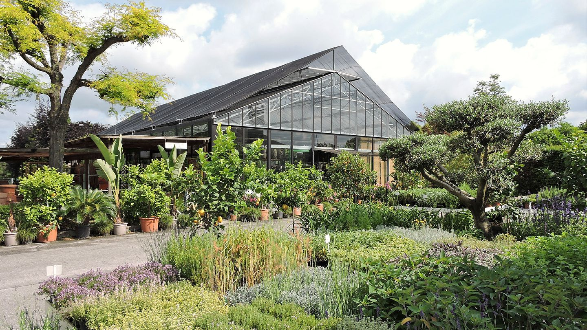
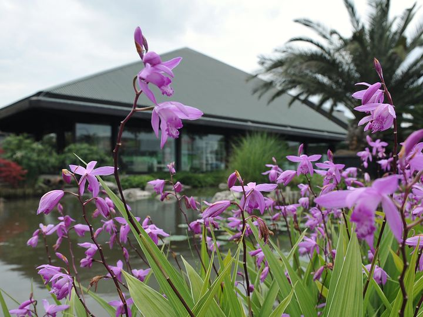
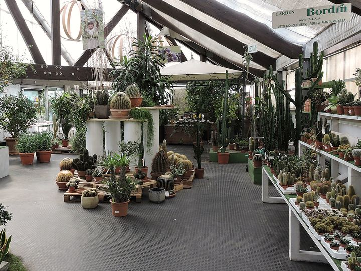
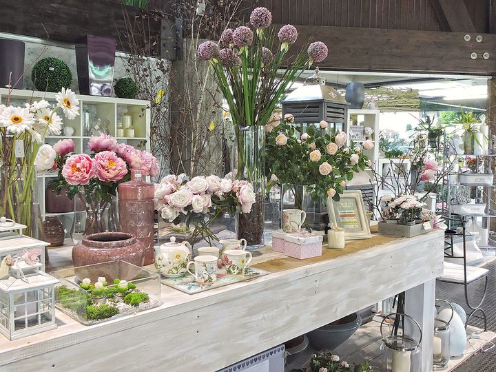
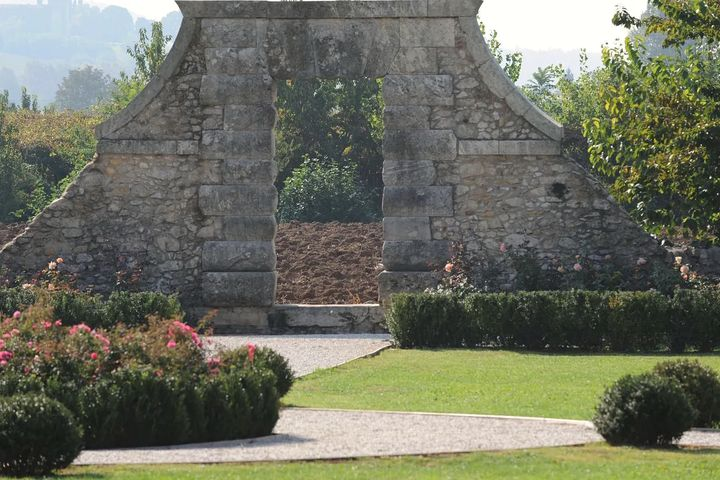
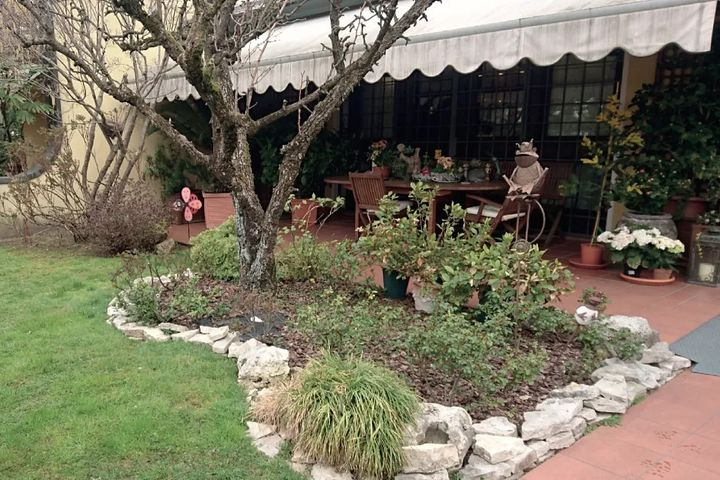
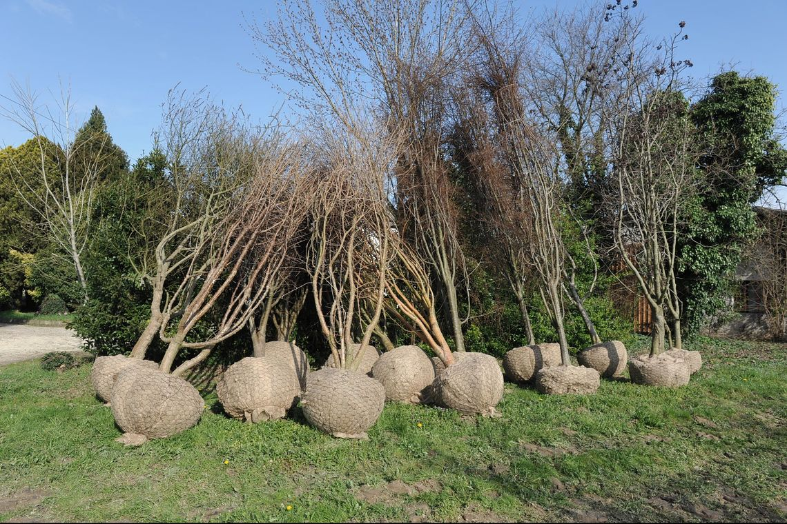
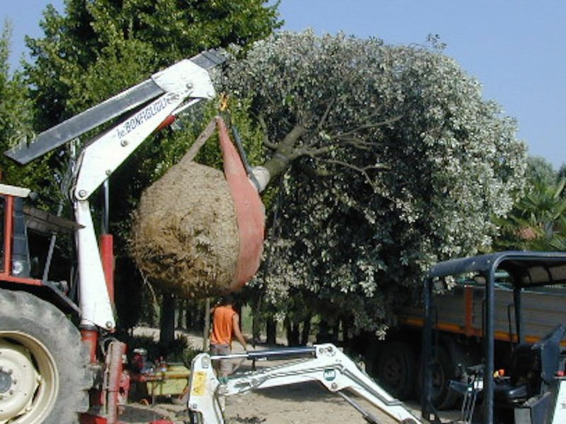

1996
Venite a visitarci.
Giardini e vivai a Saonara dal 1955
Garden, via dei Vivai 6Lun-sab, domenica chiuso
Vivai, via dei Vivai 14049 640156
Un luogo immerso nel verde, a due passi da Padova
Il Garden è uno dei primi garden center di Padova, a forma di piramide. Sono migliaia le proposte da scoprire: piante da interno e da esterno, piante grasse dalle più piccole alle più grandi, anche di rare varietà.
Trovate anche bonsai e accessori, vasi in terracotta, arredo per il giardino, profumi, detergenti bio e idee regalo.
Orari del Garden
- Lunedì
- 15:00-19:00
- Mar-ven
- 8:30-12:30 e 15:00-19:00
- Sabato
- 9:00-12:30 e 15:00-19:00
- Domenica
- chiuso
-
Piante da interno
Una vasta scelta, nella serra del Garden.
-

Piante da esterno
Per il giardino, il terrazzo e il balcone.
-

Piante grasse e bonsai
Con i vasi in terracotta.
-

Vasi e idee regalo
Per la casa e per gli spazi verdi.

Prato, siepi di bosso e rose intorno all'arco in pietra
Giardini e parchi chiavi in mano
Progettazione e realizzazione chiavi in mano di giardini, parchi, terrazze e verde pensile. Restauro di giardini storici, trapianti di piante esemplari, piante da interno per gli uffici.
Prato, camminamento in pietra e pergola in legno

Dal nostro book «I nostri giardini»
Come nasce un giardino
- 1Sopralluogo in cantiereVeniamo a vedere lo spazio e il terreno.
- 2Progetto e preventivoVi presentiamo la proposta chiavi in mano; poi venite in vivaio a vedere dal vivo le piante proposte.
- 3TempiAccettato il preventivo, fissiamo insieme le tempistiche.
- 4ManutenzioneInterventi straordinari per seguire la crescita corretta del giardino.
Nel book «I nostri giardini» si legge che le piante utilizzate «hanno una garanzia d'attecchimento di un anno».
Chiedete un sopralluogo
Bastano due righe e, se l'avete, una foto o un disegno dello spazio.

Pronti per essere spediti in tutta Italia
Produciamo natura
Piante ornamentali dai piccoli arbusti fino a esemplari unici e di rara bellezza, dalle più comuni alle poco conosciute. Per architetti, impresari e privati.
- In zolla o in vaso, anche i grandi esemplari.
- Spedizione: pensiamo noi alla logistica, anche dei grandi esemplari.
- Messa a dimora di piante esemplari, in qualsiasi parte d'Italia.
Orari del vivaio
- Lun-ven
- 8:00-12:00 e 14:00-18:00
- Sabato
- chiamate prima di passare

Trapianto di un esemplare
Per i professionisti
Mandateci la lista delle piante o il disegno: vi diciamo che cosa c'è, in zolla o in vaso.
Chiama il vivaio 049 640156La storia
«Siamo sempre alla ricerca di nuove specie botaniche e piante particolari, che testiamo nei nostri vivai.»
Nel 1955 i fratelli Saverio e Alcide fondano i Vivai Piante Bordin: prima piante da frutto e rose, poi piante ornamentali. Nel 1996 apre il Garden a forma di piramide. Oggi in azienda lavora la terza generazione della famiglia.